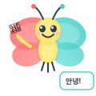

Hello, World! — 파이썬 첫 프로그램
📚 이번에 배울 것
- print() 함수로 화면에 글자를 출력할 수 있어요.
- 파이썬 프로그램의 기본 구조를 이해해요.
- IDLE과 터미널에서 파이썬을 실행할 수 있어요.
- 작은따옴표와 큰따옴표의 차이를 알아요.
✅ 시작 전 체크
- 파이썬이 설치되어 있다
- 키보드로 영어와 기호를 칠 수 있다
- 파일을 저장하고 열 수 있다
프로그래밍이 뭘까?

컴퓨터는 우리 말을 못 알아들어요. 대신 프로그래밍 언어라는 특별한 말로 이야기해야 해요. 오늘은 컴퓨터에게 '화면에 글자를 찍어!'라고 시켜볼 거예요!
프로그래밍 언어는 여러 종류가 있어요. C, Java, JavaScript, 그리고 우리가 배울 파이썬(Python)이 있어요. 파이썬은 그중에서 가장 쉽고 읽기 편한 언어예요.
파이썬은 왜 배울까?
파이썬은 1991년에 귀도 반 로섬(Guido van Rossum)이라는 네덜란드 프로그래머가 만들었어요. '누구나 쉽게 읽을 수 있는 코드'를 목표로 만든 언어예요.
2. 많이 써요 — 구글, 인스타그램, 유튜브가 파이썬으로 만들어졌어요.
3. 할 수 있는 게 많아요 — 웹사이트, 게임, 인공지능, 데이터 분석, 자동화까지!
4. 취업에 유리해요 — 전 세계에서 가장 인기 있는 프로그래밍 언어예요.
C언어와 뭐가 다를까?
같은 'Hello, World!'를 출력하는 코드를 비교해 볼까요? C언어는 꽤 길었는데, 파이썬은 놀랍도록 짧아요.
#include
int main(void) {
printf("Hello, World!\n");
return 0;
} C언어: 5줄, #include와 main이 필요해요
print("Hello, World!")파이썬: 딱 1줄! 이게 전부예요

코드를 써 보기 전에
hello.py). 파일명은 영어 소문자로, 공백 없이 써요. 코드를 쓰고 나면 Ctrl+S로 꼭 저장하세요!아래 코드를 실행하면 화면에 뭐가 나올까요? 아직 실행하지 말고, 머릿속으로 먼저 예측해 보세요.
| 1 | print("Hello, World!") |

한 줄씩 뜯어보기
파이썬의 Hello World는 딱 한 줄이지만, 그 안에 중요한 것들이 꽉 차 있어요.
print — 화면에 글자를 출력하는 함수예요. C의 printf와 비슷하지만 훨씬 간단해요.("Hello, World!") — 괄호 안에 출력할 내용을 넣어요. 이걸 인자(argument)라고 해요."Hello, World!" — 큰따옴표로 감싼 글자를 문자열(string)이라고 해요.print(출력할 내용)- 괄호
( ) 안에 출력할 것을 넣어요- 문자열은 따옴표로 감싸야 해요
- 실행하면 화면에 출력하고 자동으로 줄을 바꿔요
- C의 printf와 달리 \n을 안 써도 자동 줄바꿈!
파이썬은 C언어와 달리 세미콜론(;)이 필요 없어요. 줄이 끝나면 문장이 끝난 거예요. #include도 필요 없고, main 함수도 필요 없어요. 그냥 바로 코드를 쓰면 돼요.
'Hello'와 "Hello"가 같아요!둘 다 문자열이에요. 편한 걸 쓰면 돼요.
다만 문자열 안에 따옴표가 있을 때 유용해요:
print("I'm a student") — 큰따옴표 안에 작은따옴표 OKprint('He said "Hi"') — 작은따옴표 안에 큰따옴표 OK| 1 | # 큰따옴표와 작은따옴표 — 둘 다 같아요! |
| 2 | print("Hello, World!") |
| 3 | print('Hello, World!') |
| 4 | |
| 5 | # 따옴표 안에 따옴표 |
| 6 | print("I'm a student") |
| 7 | print('He said "Hi"') |
IDLE에서 실행해 보기
파이썬을 설치하면 IDLE이라는 프로그램이 같이 설치돼요. IDLE은 파이썬 코드를 바로 실행해 볼 수 있는 도구예요.
| 1 | >>> print("Hello, World!") |
| 2 | Hello, World! |
| 3 | >>> print("안녕하세요!") |
| 4 | 안녕하세요! |
| 5 | >>> 1 + 1 |
| 6 | 2 |
- IDLE의 >>> 프롬프트에서 바로 실행
- 한 줄씩 바로 결과 확인
- 계산기처럼 사용하기 좋아요
스크립트 모드 (Script Mode)
- .py 파일에 여러 줄 코드 작성
- 한 번에 전체 실행
- 진짜 프로그램은 이 방식으로 만들어요
대화형 모드에서는 print()를 안 써도 값이 출력돼요. >>> 1 + 1 하면 바로 2가 나와요. 하지만 .py 파일에서는 print()를 써야만 화면에 나와요.
1 + 1만 쳐도 2가 나와요.그래서 '아, print 안 써도 되는구나!' 하고 착각하기 쉬워요.
하지만 .py 파일에서
1 + 1만 쓰면 아무것도 안 나와요!파일에서는 반드시
print(1 + 1)이라고 써야 해요.터미널에서 실행하기
.py 파일을 만들었으면 터미널(명령 프롬프트)에서 실행할 수 있어요.
| 1 | C:\Users\학생> python hello.py |
| 2 | Hello, World! |
1. VS Code에서 hello.py 열기
2. 오른쪽 위의 ▶ 버튼 클릭 (또는 Ctrl+F5)
3. 아래 터미널에 결과가 나와요!
VS Code + Python 확장을 설치하면 자동완성도 돼요.
python hello.py로 실행해요.Mac/Linux에서는
python3 hello.py로 실행해야 할 수도 있어요.python --version을 쳐서 Python 3.x가 나오는지 확인하세요.Python 2는 2020년에 지원이 끝났어요. 반드시 Python 3을 쓰세요.
코드(.c) → 컴파일러(gcc) → 실행파일(.exe) → 실행
번역을 미리 다 해놓고 실행해요. 실행이 빠르지만 번역 시간이 필요해요.
파이썬 (인터프리터 방식)
코드(.py) → 파이썬 인터프리터 → 바로 실행!
한 줄씩 읽으면서 바로 실행해요. 실행은 느리지만 편리해요.
여러 줄 출력하기
print()를 여러 번 쓰면 여러 줄을 출력할 수 있어요. 파이썬은 print()가 끝날 때마다 자동으로 줄을 바꿔줘요.
| 1 | print("안녕하세요!") |
| 2 | print("파이썬의 세계에 오신 것을 환영합니다!") |
| 3 | print("오늘부터 같이 코딩해 봐요.") |
빈 줄을 출력하고 싶으면 print()만 쓰면 돼요. 괄호 안에 아무것도 안 넣으면 빈 줄이 나와요.
| 1 | print("첫 번째 줄") |
| 2 | print() # 빈 줄 |
| 3 | print("세 번째 줄") |
이스케이프 시퀀스
문자열 안에서 특별한 의미를 가지는 기호를 이스케이프 시퀀스라고 해요. 역슬래시(\)로 시작해요.
| 1 | print("줄을\n바꿔요") # \n = 줄 바꿈 |
| 2 | print("탭을\t넣어요") # \t = 탭(칸 띄우기) |
| 3 | print("역슬래시: \\") # \\ = 역슬래시 자체 |
| 4 | print("따옴표: \"안녕\"") # \" = 큰따옴표 자체 |
\n — 줄 바꿈 (New line)\t — 탭 (Tab)\\ — 역슬래시(\) 자체\" — 큰따옴표(") 자체\' — 작은따옴표(') 자체print()의 숨겨진 기능
print()에는 몰랐던 기능이 숨어 있어요. 여러 값을 한 번에 출력하거나, 줄바꿈을 없앨 수 있어요.
여러 값 출력 — 쉼표로 구분
| 1 | # 여러 값을 쉼표로 구분하면 자동으로 띄어쓰기 |
| 2 | print("이름:", "코딩이") |
| 3 | print("나이:", 12, "살") |
| 4 | print(1, 2, 3, 4, 5) |
sep와 end — 구분자와 끝문자 바꾸기
| 1 | # sep: 값 사이 구분자 바꾸기 (기본: 공백) |
| 2 | print("2025", "03", "10", sep="-") |
| 3 | print("서울", "부산", "대구", sep=" → ") |
| 4 | |
| 5 | # end: 줄 끝 바꾸기 (기본: \n) |
| 6 | print("Hello", end=" ") |
| 7 | print("World!") # 줄바꿈 없이 이어서 출력 |
주석 달기
코드에 메모를 남기고 싶을 때 주석을 써요. 주석은 파이썬이 무시하는 부분이라서, 사람만 읽어요.
| 1 | # 이건 주석이에요. 파이썬이 무시해요. |
| 2 | print("Hello!") # 코드 옆에도 주석을 달 수 있어요 |
| 3 | |
| 4 | # print("이 줄은 실행 안 돼요") ← 주석 처리됨! |
# 한 줄 주석 — 샵(#) 뒤의 모든 내용은 무시돼요C언어의
// 대신 #을 써요.C언어의
/* */ 블록 주석은 파이썬에 없어요.대신 여러 줄 주석이 필요하면 각 줄 앞에 #을 붙이거나,
트리플 쿼트(
"""...""")를 쓸 수 있어요.| 1 | # 방법 1: 각 줄에 # |
| 2 | # 이 코드는 Hello를 출력합니다. |
| 3 | # 작성자: 코딩이 |
| 4 | # 작성일: 2026-03-10 |
| 5 | |
| 6 | """ |
| 7 | 방법 2: 트리플 쿼트 (독스트링) |
| 8 | 이 코드는 Hello를 출력합니다. |
| 9 | 여러 줄 설명을 쓸 수 있어요. |
| 10 | """ |
| 11 | |
| 12 | print("Hello!") |
# print 함수를 호출한다 — 코드를 보면 알 수 있는 내용좋은 주석:
# 사용자 이름에 공백이 있으면 _ 로 바꿔야 함 (서버 규칙)— 왜 그렇게 했는지 설명하는 주석이 좋아요!
자주 하는 실수 TOP 5

Print("Hello")대문자 P! 파이썬은 대소문자를 구별해요
print("Hello")전부 소문자 print가 맞아요
print(Hello)따옴표가 없으면 변수 이름으로 인식해요 → NameError
print("Hello")문자열은 반드시 따옴표로 감싸야 해요
print("Hello')시작은 큰따옴표인데 끝은 작은따옴표 → SyntaxError
print("Hello")시작과 끝의 따옴표가 같아야 해요
print "Hello"괄호가 없어요! (Python 2 문법)
print("Hello")Python 3에서는 반드시 괄호를 써야 해요
prnt("Hello")오타! prnt라는 함수는 없어요 → NameError
print("Hello")철자를 정확히 확인하세요
File "hello.py", line 1 ← 어떤 파일의 몇 번째 줄인지 Print("Hello") ← 문제가 있는 코드NameError: name 'Print' is not defined ← 에러 이름과 설명NameError — 이름을 못 찾겠다 (오타, 따옴표 빠짐)
SyntaxError — 문법이 틀렸다 (괄호, 따옴표 짝 안 맞음)
IndentationError — 들여쓰기가 틀렸다
바꿔보기
Hello, World! 대신 다른 말을 출력해 보세요.
좋아하는 동물: print("고양이가 최고야!")
좋아하는 음식: print("떡볶이 먹고 싶다!")
숫자도 출력할 수 있어요
print()에는 문자열뿐만 아니라 숫자도 넣을 수 있어요. 숫자는 따옴표 없이 그냥 써요.
| 1 | print(42) # 정수 |
| 2 | print(3.14) # 실수 |
| 3 | print(1 + 1) # 계산 결과 |
| 4 | print(10 * 3) # 곱하기 |
| 5 | print(2 ** 10) # 2의 10제곱 = 1024 |
| 6 | print("1 + 1 =", 1 + 1) # 문자열 + 계산 |
print(1 + 1) → 2 (계산됨!)print("1 + 1") → 1 + 1 (그냥 글자로 출력!)따옴표 안에 넣으면 글자(문자열), 밖에 쓰면 숫자예요.
[심화] 파이썬은 어떻게 동작할까?
파이썬이 코드를 바로 실행한다고 했지만, 실제로는 내부에서 몇 단계를 거쳐요.
2. 바이트코드 컴파일
파이썬이 내부적으로 .pyc 파일(바이트코드)로 변환
C와 달리 사용자가 직접 하지 않아요
3. PVM (Python Virtual Machine) 실행
바이트코드를 한 줄씩 실행
Java의 JVM과 비슷한 개념이에요
즉, 파이썬도 내부적으로는 '컴파일'을 하지만,
사용자가 모르게 자동으로 해줘요!
| 1 | # 파이썬 바이트코드 확인해보기 (심화) |
| 2 | import dis |
| 3 | |
| 4 | def hello(): |
| 5 | print("Hello, World!") |
| 6 | |
| 7 | # hello 함수의 바이트코드를 보여줘요 |
| 8 | dis.dis(hello) |
| 1 | # 파이썬의 철학 — The Zen of Python |
| 2 | import this |
[심화] 다양한 출력 방법
| 1 | import sys |
| 2 | |
| 3 | # 1. print() — 가장 기본 |
| 4 | print("Hello!") |
| 5 | |
| 6 | # 2. sys.stdout.write() — 줄바꿈 없음 |
| 7 | sys.stdout.write("Hi ") |
| 8 | sys.stdout.write("there!\n") |
| 9 | |
| 10 | # 3. 파일에 출력 |
| 11 | with open("output.txt", "w") as f: |
| 12 | print("파일에 저장!", file=f) |
| 13 | |
| 14 | # 4. 여러 줄 문자열 (트리플 쿼트) |
| 15 | print("""이건 |
| 16 | 여러 줄을 |
| 17 | 한 번에 출력해요""") |
print("내용", file=f) 하면 화면 대신 파일에 출력돼요!나중에 파일 입출력을 배우면 자세히 다뤄요.
연습문제
print()가 하는 일을 한 문장으로 설명해 보세요.
다음 코드의 출력 결과를 예측하세요.print("파이썬", "재밌다", sep="!")
다음 중 에러가 나는 코드를 모두 고르세요.
A) print("Hello")
B) print(Hello)
C) Print("Hello")
D) print('Hello')
화면에 자기 이름, 나이, 좋아하는 음식을 세 줄에 걸쳐 출력하는 프로그램을 작성해 보세요.
아래 코드에는 에러가 3개 숨어 있어요. 찾아서 고쳐 보세요.Print("Hello World!")
print(안녕하세요)
print('I'm a student')
print()의 sep과 end를 활용해서 2025-03-10을 출력하세요. 단, print()를 한 번만 쓰세요.
print()를 5번 사용해서 아래 모양의 삼각형을 출력하세요.*
**
***
****
*****
print()를 한 번만 사용해서 위 삼각형을 출력하세요. (힌트: \n을 쓰세요!)
정답
정답
print("나이: 12살")
print("좋아하는 음식: 떡볶이")
(내용은 달라도 print 3번 쓰면 정답)
print("**")
print("***")
print("****")
print("*****")
용어 정리
[컴퓨팅 사고력] 순차 실행 — 코드는 위에서 아래로!
[디버깅] NameError, SyntaxError 읽는 법
[실생활] 게임 점수판, ATM 안내문, 자판기 화면
[코딩기초] 파일명 규칙, 들여쓰기, 주석 습관
input() 함수를 쓰면 돼요! 다음 유닛 '변수와 입력'에서 알아봐요.